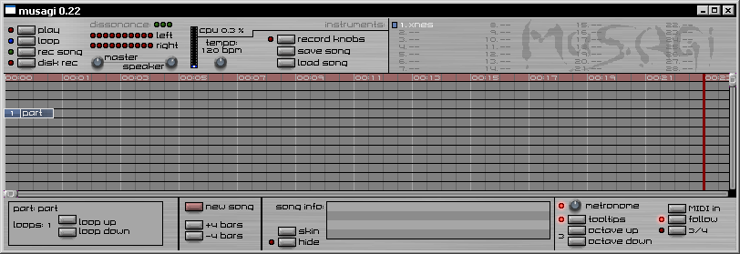
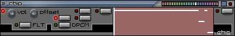

|
Musagi 0.23 documentation This is a guide to most of the functionality in the application. If you encounter any bugs or annoying behaviour, please let me know (try email, or the forum). You can enable the log file by editing config.txt, this could be useful if you experience crashes. Contents: Quick start Overview Main interface Parts Instruments - xnes - chip - vsmp - swave - protobass - midinst - midperc - VSTi - operator - wavein LMB, MMB, RMB are the left, middle and right mouse buttons. Clicking the middle mouse button usually means clicking the scroll wheel. If you don't have a middle mouse button (or don't like using it) you can use Alt+LMB instead. Quick start Basic things you need to know to play around a bit: - Play instruments using your keyboard or midi input device. [although midi input is currently disabled due to being broken...] - If the sound is crackly or somehow doesn't seem to work right, try closing the program and increase latency in config.txt - Select instruments by clicking LMB in the upper-right list (one is present by default, add more using the RMB context menu). - Play around with instrument parameters in the window to the right. Double-click instrument names to show or hide their windows. - The window to the left is a "part window" where you can record notes either live or by click-dragging LMB (RMB to erase notes). There are tooltips for all buttons and knobs, just hover over them to get information about what they do. Hold Ctrl to make the tooltips appear instantly. Try loading an example song and playing it, then have a look at some of the instruments that were loaded with it. To turn a knob, click LMB on it and move the mouse up and down while holding LMB. Hold Shift while doing this to turn at 1/10th the speed (more precision). Horizontal movement has no effect on the knob. The three lights in the top-left area of the window labeled "dissonance" light up if there are notes playing that don't harmonize well with each other. This is meant as a rough guide for beginners to identify problematic parts of a song, or to help pick out suitable notes when building scales and chords. Naturally, this is a very simple estimate based on a small table of note relations, and there may definitely be pleasant configurations that register as "dissonant". Similarly, just because this indicator doesn't light up won't mean that everything played sounds great... Typically though, if your song doesn't sound very good and these lights come on, you should look into moving notes around until the dissonance is gone. It might get you back on track. Overview Songs are made up of an arrangement of "parts" which contain a series of note triggers. Each part is bound to a specific instrument which is controlled by these triggers to generate the actual sound. Apart from normal editing operations like creating/moving/deleting them, parts can also be "cloned" and placed at various places on the timeline. Changing the contents of a cloned part affects all clones (there is really only one part, but the clones make up several views/instances of it) Furthermore, parts can have a loop position and loop count. Looped parts are trailed by a corresponding number of ghost images to indicate the full duration. Control the number of loops using up/down buttons in the bottom left corner of the screen. For most things, there is a context menu brought up by right-clicking. The exception is window titles and some other areas, where right-clicking will instead edit text (part or instrument names). Musagi uses OpenGL for the graphical interface and Portaudio/DirectSound for audio. Main interface  Click and drag to move parts around in the timeline. The rows ("tracks") are just there to guide arrangement and structure, they are not "channels" in any way, so don't be afraid of spreading things out. The only real function they have is that they can be muted (see below), which means it's useful to treat them as channels after all ;) Space+LMB is used for scrolling in the song or part windows. You can open a context menu by clicking RMB on an empty spot in the timeline. From there it's possible to create new parts or mute/unmute tracks. If you right-click on an existing part, you get options for copying and cloning it, among other things. There are also shortcuts for some operations: Click MMB to create a new part using the currently selected instrument. Use Shift+MMB to create a normal non-cloned copy of the currently selected part. This will be a new independent part with its content copied from the old one. While the copy receives a modified name, it's entirely legal to have several unique parts with identical names (it might be confusing though). Hold Ctrl while clicking MMB to create a clone of the currently selected part. Parts with more than one instance present are marked with an orange lower half. Anything done to one of them affects all clones. You can drag a selection box using the mouse to select multiple parts at once. Multiple parts can be moved and deleted together, but not yet copied. Maybe in a future update. Double-click LMB on a part to bring up its window. Parts with open windows are highlighted in red. Parts placed below the grid area won't be heard when playing the song. Use this area to store "scrap" parts that have no place in the song. Click Ctrl+LMB on an empty part of the timeline to mute that track. Any parts placed on this track won't be triggered when playing the song. Use Shift+Ctrl+LMB to toggle "solo" mode, where all tracks but the clicked one are muted. This can also be used to quickly unmute all tracks (Shift+Ctrl and click LMB twice) Click RMB or LMB in the song info box to enter title, author and other relevant text about the current song. At the top, you have two knobs to control volume. Master volume is the "true" volume shown on the level indicators. Adjust this knob to avoid clipping of loud sounds. The other knob labeled "speaker" is just for controlling what you hear while working, adjust it freely to get a comfortable audio level. Blue/white bar indicates CPU load, you might experience crackling if it reaches near 100% (this is irrelevant for disk recording though, where output is always perfectly clean). Tempo knob controls playback speed. Click LMB in the top red bar to set start position for song playback. RMB sets end position. If song loop is enabled Shift+LMB sets loop start position (playback will jump here when the end position is reached). You can also click and drag the position bars using LMB (still in the red area). Main buttons: "play" (F5) - Play song from start position. "loop" - Toggle song loop. "rec song" - Automatically record the song from start and end, will activate "disk rec" as seen below. This button will disable looping by default, but you can manually activate loop after the recording has started if you really want to record several loops of the song. Leaving it alone should result in a one-loop WAV sample that is suitable for repeated play (if the song was built for it). "disk rec" - Toggle recording audio output to .WAV file of choice. Records all output, even if nothing is playing (keyjazz will be recorded). Output is "clean" regardless of what you hear in the speakers, it's independent of CPU load. (output file is an uncompressed 16 bit signed stereo sample at 44100 Hz). "record knobs" (F6) - Starts playing the song while recording all movement of any knobs you have selected (click RMB on a knob and select "record" to prepare recording, selecting "default" makes the current knob position default - which is what will be used when there is no recorded value, "clear" erases all recordings for that knob) "save song" (Ctrl+S) - Save everything to a *.smu-file. Ctrl+S saves without asking for a new filename. "load song" (Ctrl+L or Ctrl+O) - Yep, restores everything from selected file (at least that's the idea). (bottom of window) "new song" - Clear everything to start from scratch. "+4 bars" - Insert empty space into the timeline at the current start position (by moving parts to the right). This is for restructuring the song without moving all parts around manually. "- 4 bars" - Removes space in the song by moving parts to the left. This won't do anything if there's not enough room to move parts freely (it's non-destructive). "skin" - Select a different graphical theme for the application. This is not fully implemented yet, so please don't spend any time working on custom skins yet. "hide" - Hide the main song area to conserve cpu power, also useful if you want to listen to a song without being distracted by the visible song structure. Preferences: (bottom right of the window) "metronome" - Adjust metronome volume, bring it all the way to zero to disable count-in. "MIDI in" - Click this button to select which MIDI device you want to use for input. Set "mididevice" to -1 in config.txt to disable MIDI input. "tooltips" - Toggle showing tooltips for buttons and knobs. "octave up" (PageUp) - Increase note bias for keyboard by one octave. "octave down" (PageDown) - Make pancakes. "follow" - Change scroll position to follow song while playing The application will remember these preferences along with window position/size until next time you start it. Parts When a part window is selected, pressing keyboard keys will trigger the associated instrument and show a visual indication of triggered notes. Part windows can be moved by click-dragging LMB on their titlebars and resized by dragging the handle in the bottom-right. Double-click on title bar to hide window. When a new part is created it is assigned the currently selected instrument and a random name. Click-drag LMB in the main part area to place notes. Click again on a note to change its duration. RMB to delete notes (no need to click, just rub them out). Hold Shift and drag with LMB to select multiple notes using a selection box, and move them by dragging LMB (without Shift) when there are selected notes. Ctrl+A or Shift+A selects all notes. Press DEL to remove all selected notes. Use Ctrl+C to copy selected notes, and paste them with Ctrl+V in any part window. Pasting only works when there is no selection. If two or more notes happen to end up on top of each other, a small red square will be displayed to alert you - move notes out of the way until the red square disappears. Right click anywhere to deselect all (but be careful not to click on an actual note as it will be removed). Hold Ctrl and drag with LMB to move a single note. To create slides, click MMB on an existing note and drag. The slide will begin at the end of the regular note. To link several notes with sliding transitions, use "mono" mode in the associated instrument (if available). If you don't do this there might be some short overlap between notes which leads to popping noises. Polyphony depends on the instrument, but generally it's possible to have a large number of simultaneous notes, although it will increase CPU load. Putting an instrument in "mono" mode (where applicable) means that new triggers will interrupt playing ones, even if they overlap. Some instruments (currently xnes and chip) will play chords of overlapping notes as arpeggios when in mono mode, if the notes are triggered at the same point in time. The section seen below the main trigger area is for trigger volume/velocity. Modify these using LMB. Each newly created note is put at maximum intensity by default. It's possible to have several notes of different volume at the same point, but currently you can't edit them separately. Part window buttons: "record" - Record input live from the keyboard. If the metronome is activated it will count in four ticks before the actual recording starts. Recorded notes will snap to the nearest "reasonable" position. "play" - Play this part from the beginning. Will loop if there's one set. "place loop" - Click this then click LMB in the note area to place the loop point/end. Click RMB to remove loop. "load" - Load part contents from file (only notes, instrument is preserved) "save" - Save part contents to file (only notes) "clear" - Wipe all note triggers. "set instr." - Re-binds this part to the currently selected instrument. Part-specific buttons below the song area: "loop up" - Increase the number of loops for this part instance (if the part has a loop set). "loop down" - As above, but very different... Instruments Click LMB on an instrument name to select it or RMB to bring up its context menu. Double-click LMB to open or hide its control window. Each instrument has a multi-colored bar on the right side of its window title. This can be used to select a representative instrument color which creates better overview in the song. Instrument operations (from context menu): "rename" - Change the instrument name. "use for current part" - Select a part in the song area and then click this. The same thing can also be done using a button in the part window. "load/replace" - Load an instrument into the selected slot in the instrument list. "save" - Save selected instrument. "delete" - Remove selected instrument. You need to make sure it's not in use by any parts by either removing those parts or re-assigning them to other instruments. Effects:  Technically, there are "effects" too (like in Buzz, yay), but for now there is only one and it gets attached to all instruments by default. It's called "gapan" and was originally intended to allow gain and pan tuning, but I ended up adding some filtering, distortion and reverb support as well. From left to right, roughly: "gain" - Final amplification applied after all other effects. "pan" - Stereo placement of this instrument. Filter: (green LED indicates if the filter is active) "HP" - High pass filter frequency (no resonance, applied before low pass filter) "LP" - Low pass filter frequency "RS" - Low pass filter resonance, high resonance can cause fairly wild variations in volume depending on whether the source sound is near the resonant frequency - you may need to turn down gain to avoid clipping. Distortion: "dist" - Click the left-most button to activate distortion. Type is determined using the other three buttons: Top button is regular "clip" distortion. Middle one is sine-shaped distortion, which feeds the waveform as the parameter to a sine function, in effect creating a form of FM modulation. Bottom button is a sort of blend between the two, where it behaves like a linear version of the sine function until it's saturated, from where it'll start clipping. "amp" - Pre-amp applied before distortion, use it to control the amount of dist. Reverb: "str" - Reverb strength/intensity, disable by turning it all the way down (LED goes out). "dpt" - Reverb depth, the "size of the room" as it were. Larger values generally requires higher fidelity to sound good (see below). "qty" - Reverb quality. This is needed because the effect tends to eat a bucket-load of CPU... I'll try optimizing this using feedback instead of the current approach, but for now you'll have to deal with it. If you're short on CPU you can keep the fidelity low while editing the song and then crank it up for disk rec (where CPU usage doesn't matter). Here are descriptions for the current instruments. More are planned for future releases. xnes: This instrument is meant to simulate the audio capabilities of the NES and provide means to create a variety of more or less complex sounds that you could find coming from one of these machines. The NES has two variable-duty square channels, one triangle channel, one noise, and one 1-bit delta PCM. This last one isn't covered by xnes, but an approximation of it can be found in the "chip" instrument (see below). xnes doesn't claim to be a perfect emulation, and in its default mode it doesn't even try very hard. There's a "realistic" mode though (button with green LED on the right), which limits the range of settings for square duty cycle and volume levels to mimic what's available on a real NES. Use this if you want to make authentic sounds. Square channels aren't biased to compensate for DC offset due to duty cycle variation, but neither is the original NES. Just remember that there will be "plopping" when triggering sounds with high/narrow duty cycle (and when releasing them). For complex sounds each channel has an arpeggiator and a volume envelope. The two square channels also have a duty cycle envelope. Knobs to the left are volume controls for the individual channels. The button on the top far right brings up the general options page with various global settings: "del" - Slide delay, how long to wait before sliding and/or starting vibrato. "ss" - Slide speed (and direction), 12 o'clock is no slide. "vd" - Vibrato depth. "vs" - Vibrato speed. Turn this down to zero and vibrato depth will control static detune amount. Useful for combining instruments. "arp speed" - Arpeggio speed. "a.loop" - Toggle arpeggio loop. If disabled the arpeggio will run through to the end position and stay there. "mono" - Toggle mono/polyphonic mode, mono is useful to prevent overlap - new triggers will override the old sound. "sld" - Note-to-note slide (only available in mono mode), time to spend sliding between two notes. Leftmost setting disables sliding. "attack" - Attack speed of envelopes, speed used while note is triggered. "decay" - Decay speed of envelopes, used after note has been released. The buttons to the left of the "display area" in the middle are for arpeggios and envelopes. Each channel has its own set of buttons on the same vertical level as the volume knob and label. Rightmost button - Arpeggio: This view is vertically scrollable, red squares indicate note offsets (default is zero). Octaves are highlighted, as well as every 3rd offset (the arpeggio shown in the image is 0,4,7). White line is the end position where it will loop (if a.loop is set in general options). Right click to remove an offset and make a "hole" there. This will mute the sound at that point. To move the loop point, hold Shift and click LMB. The arpeggio will play up to and including the note at the loop point. If the xnes is put into mono mode and several notes are triggered simultaneously, they will be played in sequence (rising scale) as an arpeggio using the current arpeggio speed. This will override any arpeggio pattern drawn in the instrument window. Chords using the two square channels can sound very nice and is used a lot in real NES music. One simple way of making chords without manually placing the notes in the part window is to leave the arpeggio for one square at the default setting and set the other one to a constant offset above or below zero. Using full octave offsets can give "organ"-type sounds (especially if the triangle is also used to get another octave in there). Middle/Left button - Volume envelope: Up is louder, down is quieter. LMB to draw volume curve, RMB and Shift+LMB to place loop end/start points. When a note is triggered the envelope will start "playing" from the far left and move right at the specified attack speed (see above) until it reaches the black end-of-loop point where it will jump back to the light grey start-of-loop point. When the note is released it will start moving at the decay speed until it reaches the right edge. At any point the volume of the channel is determined by the height of the curve at the current playing position (shown as a white line). Pressing the suspicious little button to the far right of the window below the options button causes the currently displayed envelope to be copied to all channels. This is useful when you need multichannel sounds to behave the same way across the board (like a coherent reverb/falloff). NOTE: Something sometimes causes envelope loop positions to get messed up, so if a channel suddenly goes silent then this might be the reason. You need to restore its loop range. This needs fixing, obviously. Leftmost button (for square channels) - Duty cycle envelope: Same deal as volume envelope, but controls duty cycle. Bottom values result in pure 50/50 square, higher is more "open"/narrow duty cycle, with the absolute top position causing silence or 0/100. Smooth duty cycle sweeps aren't really possible with the NES, so using them tends to make things sound more like C64/SID (that might not be a bad thing though). There's a duty cycle knob as well, which basically scales the entire envelope range... If the envelope is in its default mode of all zero then the knob works as expected and directly determines duty cycle. chip:  This instrument is built upon XNES and most of it works the same way. It is cut down to one channel though and has the added functionality of a user-determined waveform. (see above for the XNES-like functions) Leftmost button - Waveform editor (default mode): Draw with left mouse button. Uh, that's it. What you draw is what you hear :) There's a knob for wave offset, which determines which part of the waveform is played. The active area is red in the waveform editor. What is the duty cycle envelope in XNES is offset envelope here. Envelope output controls offset. Simple stuff. "DPCM" - Activates a 1-bit delta-PCM mode that attempts to mimic the NES. It's probably not very authentic as I have no real experience with using the real thing, but I think the basic specs are right - and it does seem to sound pretty much like the real thing (depends a lot on what waveform you draw). "FLT" - Enables a preset slightly resonant lowpass filter that helps cut off harsh frequencies and makes for much cleaner sounds, crucial for bass instruments. swave: Load .WAV files. Make beats. Be happy. Do feed the animals. There are 12 sample slots, one for each note in an octave. The green light indicates if a sample is loaded in that slot. Red light shows if a sample is playing. Top knob controls volume. Bottom knob is pitch (this is particularly useful when loading drum loops or similar, where you want to fine-tune the duration of the sample - remember Shift-knobbing!). Press a button to load a .WAV file into the corresponding slot. If you press cancel or select an invalid file the slot will be cleared. Samples are played by triggering notes as usual. Each octave is mapped to the same range of samples, so C-4 is the same as C-5 etc. This can be used to spread out the instruments on the keyboard for better access when doing live recordings. Loaded samples will be in mono, normalized and stripped of leading and trailing silence. This means that you can generate drum/effect samples almost on-the-fly in musagi by starting disk rec, triggering a sound using some instrument, stopping disk rec, then loading the produced .WAV file into SWAVE directly. When saving a SWAVE instrument all the samples are saved with it, so there's no need to keep track of the .WAV files you used when you built the SWAVE sound bank. vsmp: Old-school tracker-type action. WAVs as instruments. Click the "load wav" button to load a sample. The note number indicates what note the sample was recorded at. This needs to be calibrated properly if you want the sound to play in harmony with other instruments. Same thing goes for volume normalization here, the code is the same as for SWAVE. protobass: TB-303 wannabe. Modeled from visual inspection of RB-338 output. Relatively heavy on cpu usage compared to the other instruments. Basic structure is a sawtooth-ish waveform run through a lowpass filter with variable resonance, and an envelope that controls the cutoff. The envelope works from the set cutoff level and up, so you never get a cutoff frequency lower than the one set by the cutoff knob. The interface on this one consists of knobs to control various sound parameters. "cutoff" - Base frequency of lowpass filter. "reso" - Resonance strength, applied at the cutoff frequency. "env.mod" - Envelope modulation, scale of cutoff envelope. "decay" - Decay speed of the envelope. "env.shp" - Envelope linearity, left is sort of exponential falloff, up is linear, right is "delayed". The knobs you'll most likely want to play with are env.mod and cutoff. midinst: MIDI instrument. Select an instrument to use and it will be played through your default midi-out device. Adding one of these to the song will disable normal wave output and only allow midi instruments to be heard (this is due to the midi system using a different timing mechanism and it's currently not possible to sync it with the regular audio). Disk rec doesn't work with midi instruments since musagi doesn't have access to their output waveforms. It's still possible to record a midi song using a third-party sound recording application though, and future musagi versions will probably include that functionality built-in. At the moment there's a pretty restrictive limitation on the number of midi instruments allowed - no more than 15 in one song. I'll later change this to no more than 15 playing simultaneously (which would make it more or less unlimited). Removing all midi instruments will resume the default wave output mode. Slides don't work with midi instruments. "volume" - Volume/velocity. "instrument" - MIDI program number (standard instrument name shown). "octave" - Base octave offset, used to bring oddly pitched instruments within a comfortable range. midperc: MIDI percussion instrument. Works in the same manner as swave, but uses the default midi-out device to play percussion sounds. The sound mapping repeats inside every 12-note octave. Comes pre-configured with a simple drum kit. top row of knobs - Volume/velocity of each sound. bottom row of knobs - MIDI percussion program number. VSTi: Used for interfacing with VST instruments. plugin - Click button to select a VSTi DLL to use. interface - This button toggles the native VSTi interface window. pitch/mod - Emulates MIDI pitch/mod wheels. vel - Overall note velocity. oct - Octave offset. program - Selects a sound program/patch from the VSTi. preamp - Internal amplification between VSTi-generated sound and musagi effects. operator: This is a special kind of instrument which can't produce any sound of its own. Instead, you connect two other instruments to it and the operator will combine their outputs in various ways. There are two main modes of operation: ringmod: Ring modulation, or simply multiplication of the two waveforms. This tends to produce non-musical metallic resonant sounds. From wikipedia: "On the C64 SID chip, ring modulation multiplies a triangle wave with a square wave." - and it can indeed sound like a SID in some circumstances. I also believe it's been used for creating percussive sounds in various 80's synthesizers. You can adjust the strength of this effect using the left-most knob. This will essentially crossfade between a regular mix of the inputs and the multiplied ring modulation. Even a pure mix is useful though, as you can link the two connected instruments together. This will make them play the same notes, simultaneously. Coupled with vibrato or frequency offset (using arpeggiator or detune) this can create very interesting effects. vocoder: Hooray! Plug a voice sample into channel A and some synth into B, then let them both rip to produce lovely robotic voices and what not. The principle behind this classic type of vocoder is that a bank of bandpass filters (through FFT processing) will analyze the voice sound and apply a similarly shaped filter to the synth, which will make it appear to mimic the character of the voice. Notice that you will indeed have to produce sound at both inputs to hear anything, but it's not recommended to actually link the instruments in this mode. The reason for this is simply that you'd typically use swave for the voice sample, and it doesn't react to note triggers in the same way as synths. Normal operation would be to trigger a voice sample, then trigger one or several notes on the synth. With linked instruments, you also couldn't trigger several synth notes in sequence while playing the same voice sample (robotic singing, anyone?). For convenient testing, you can create a looping part that repeats the voice sample over and over while you improvise on the other instrument to try out different configurations. Low frequencies of high-duty square tends to work nicely for the classic robot effect. To adjust various aspects of the sound, use gain controls on the different participating instruments. You can see the voice input levels in the right-most indicator in the operator window. Adjust voice gain to keep this reasonable (not clipping too much while still reasonably strong). Treble is passed more or less untouched from the voice to make consonant sounds easier to make out. If you increase gain in the synth instrument (input B), you will get more voice/body compared to the treble/consonants. Regulate final output volume using gain on the operator. In vocoder mode, strength blends between original voice and vocoded result. Note that I might modify and tweak this instrument without prior notice, so keep a backup of the musagi version you originally used when creating vocoder songs if you are worried about perfect sound reproduction. wavein: Outputs sound from the current wave recording source. You can change this using your soundcard properties or Windows volume control. Typically you'd want to use a microphone. Unfortunately there is a bit too much audio delay for this to be comfortable at the moment, but that should be resolved in a future update when I've implemented ASIO support. The main motivation for adding this was to get live vocoder effects :P Gain - Amplification level. Dynamic - Toggles dynamic/automatic amplification. |